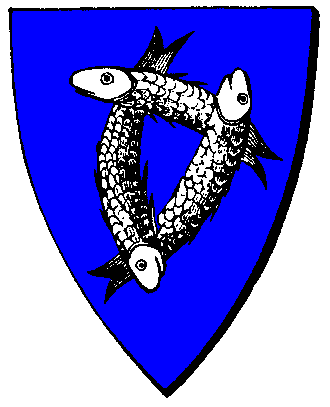

| Übersicht,
Anschläge und Stammtisch (RPG) |
|
Deamon in der Hand eines Laochs (2  ) )
|
| Samara (RIP) |
Ich selber hab den Dämon in der Gilde gesehen. Ich habe die ganze zeit nix gesagt, weil ich Angst hatte von Falster oder seiner Leute bestraft zu werden. Doch kann ich dies nicht mit ansehen wie Leben einfach so geopfert werden :(. Und trotz der Angst nun einen Attentat von den Laochs ausgesetzt zu sein. Bereue ich nichts, denn ich hoffe meine Worte geben den Familien Hoffnung, in der Bestrafung an Milu, dass ihre verwandten,freunde u.s.w. gerecht werden.
Darauf gebe ich mein Wort
gez.
Lady Samara,
Vorsteherin von Nimheria
Zur 3. Stunde am 30.Saatmond im Jahre 421 |
14.07.05 1:04
|
|
| encalion béliar (RIP) |
Nicht sonderlich glaubwürdig Samara, da ihr euch seit heute VOR den Vorfällen mit den beiden Orkburgen mit dem Beschuldigten im Krieg befindet.
encalion béliar,
Kardinal im Dienste des einzig wahren Glaubens an Pheron,
Ehemann der reizenden Feniá Aducirièl
Zur 5. Stunde am 30.Saatmond im Jahre 421 |
14.07.05 1:33
|
|
Cordarex
  |
aber es ist doch erstaunlich wieviele Leute scheinbar den ganzen Tag damit verbringen alle paar Minuten Informationen über alle Scherbenbewohner in der Kriegergilde zu sammeln und sei es nur über die von welchen die Geschichtswichtel grade berichten. Nun ja, die Konvente werden entscheiden.
Freiherr Cordarex,
Vorsteher von Seyda Neen
Zur 11. Stunde am 30.Saatmond im Jahre 421 |
14.07.05 2:47
|
|
Morgan Muirgius
 |
Ich würde einfach sagen, dass "man" auch nachschaut, wenn man einen Hinweis bekommt ... und sich dessen selbst versucht zu überzeugen.
Bendur zum Gruße
Morgan Muirgius,
Kardinal im Dienste des einzig wahren Glaubens an Bendur
Zur 12. Stunde am 30.Saatmond im Jahre 421 |
14.07.05 3:00
|
|
| Rhenaya (RIP) |
Auch die Insassen der Kriegergilde in Nórê en airita Pheron, wussten mir zu besagtem Zeitpunkt der Orkburgen das selbe zu berichten. Doch gelte ich auch nicht als Glaubwürdig, da ich sowohl Atheistin bin als auch eine Kriegserklärung von Levthan Araxes besitze...
Rhenaya,
Atheistische Freiheitskämpferin
Zur 8. Stunde am 31.Saatmond im Jahre 421 |
14.07.05 7:48
|
|
| Eldjárn von Kazaana (RIP) |
Traurig Traurig...
Ich fasse mal Zusammen.
Miluiverion Balaneth wurden nachdem er in unglaublich schneller Zeit 2 Orknester beseitigt hat mit einem niederen Dämonen gesichtet.
Nach einem Rundruf fanden sich 4 weitere Zeugen die sich Teils aus Angst erst spät zu Wort meldeten.
Ein König, der wieder einmal die Denkarbeit seiner Diener übernehmen muss, schreitet ein, obwohl er mit der Sache kaum was zu tun hat und versucht, wie jedes Mal, die Glaubwürdigkeit der Zeugen mit fadenscheinigen Argumenten zu eliminieren.
Wissend, dass er im Unrecht ist rechtfertigt er sich für seine königlichen Verhältnisse ziemlich oft...
Geistliche Würdenträger verbündeter Nationen greifen ein und argumentieren blind für den Angeklagten, nicht wissend ob er sie belügt, oder noch schlimmer sie wissen von dem Verbrechen und verteidigen ihn trotzdem...
Endlich konnte mal bewiesen werden was allgemein bekannt ist und ich kann nur hoffen, dass die hunderten von Toten irgendwann mal gerächt werden.
Mein Beileid denen die dafür sterben mussten…
*geht wieder traurig vom Anschlagsbrett*
Eldjárn Ívi Ejolfsson,
Atheistischer Freiheitskämpfer,
Schlingelchen
Zur 15. Stunde am 31.Saatmond im Jahre 421 |
14.07.05 9:21
|
|
| Eleonore von Aquitanien (RIP) |
kinggidora was haben die laoch mit der sache zu tun? es handelt sich um die Tat einer einzelnen Person und nicht um die Tat einer Nation. Mit eurer politisierung nehmt ihr eurer Aussage leider jedwege glaubwürdigkeit, wirklich sehr bedauerlich. Zum Glück gibt es aber auch noch neutrale Zeugen die den Vorfall auch bezeugen können.
Eleonore von Aquitanien,
Vorsteherin von Bendurs Geheiligte Hallen,
Kardinälin im Dienste des einzig wahren Glaubens an Bendur,
Diplomatin der Turris Fortis,
Sonderbeauftragte des Bendurkonventes,
Freundin der Kräuterinsel-Wichtel
Zur 16. Stunde am 31.Saatmond im Jahre 421 |
14.07.05 9:35
|
|
| Pechtrabba (RIP) |
Analog dazu würdet ihr mich nicht ernst nehmen wenn ich folgendes sagen würde :
Dämonenanbeterin in den Reihen der Turris Fortis
Sicherlich ist es nicht gut wenn sich weltliche und geistige Aspekte vermischen und hier sollte eine klare Trennlinie gezogen werden.
Die weltliche Frage wäre : Hat die Nation Laoch d´Orchadas den Vertrag gegen die Sklaverei unterschrieben ? Wenn nicht, wäre der Punkt erledigt.
Die geistige Frage lautet : Hat ein Pheronkonventsmitglied (der genau Rang ist mir leider nicht bekannt) wissenlich einen Dämonen beschworen und dafür Sklaven geopfert ?
Beide Fragen sollten nicht öffentlich erläutert werden.
Pechtrabba,
Hohepriesterin im Dienste des einzig wahren Glaubens an Larja,
Anführerin der glorreichen Nation "Namenlose Nation"
Zur 19. Stunde am 31.Saatmond im Jahre 421 |
14.07.05 10:22
|
|
| Eleonore von Aquitanien (RIP) |
Es gibt dann dochnoch einen klitzekleinen unterschied ob jemand sagt "Dämonenanbeterin in dne Reihen der Rurris Fortis" oder sagt "Da frage ich mich doch, wie schoen es ist das sich die Laochs auch an die Regeln der Goetter halten. da sieht man wieder einmal wie sehr sich die Laochs ums Wohl ihrer Buerger kuemmern. Sie versklaven sie und opfern diese fuer ihre dunklen Machenschaften. Wo wird das noch enden??? Kann keiner was gegen sie tun??? Wer wird ihr neachstes Opfer??? Wie viele Opfer sind schon gefallen unter ihnen und keiner weisz davon??? "
im ersten Fall ist es nur ein Hinweis darauf das in der TF eien Dämonenanbeterin ist. Im zweiten Fall wird gesagt das die ganze Nation aus Dämonenanbetern besteht.
Eleonore von Aquitanien,
Vorsteherin von Bendurs Geheiligte Hallen,
Kardinälin im Dienste des einzig wahren Glaubens an Bendur,
Diplomatin der Turris Fortis,
Sonderbeauftragte des Bendurkonventes,
Freundin der Kräuterinsel-Wichtel
Zur 19. Stunde am 31.Saatmond im Jahre 421 |
14.07.05 10:26
|
|
| Rhenaya (RIP) |
Nun hier geht es aber um eine einzelne Person, die von der gesamten Nation samt verbündeten gedeckt wird. Vondaher finde ich kingidoras einwand nicht zuweit hergeholt. Aber es ist ohnehin zu erwarten das die "fleissigen" Sklavenjäger-jäger-konvente nichts tun gegen ein Mitglied ihrer selbst. aber sobald ein unscheinabrer Hinweis auftritt, gegen persönliche Feinde der Konventsmitglieder (dazu noch von Nationsangehörigen der Konventler), wird sofort verketzert...
Rhenaya,
Atheistische Freiheitskämpferin
Zur 21. Stunde am 31.Saatmond im Jahre 421 |
14.07.05 10:42
|
|
| Eleonore von Aquitanien (RIP) |
Aber es ist ohnehin zu erwarten das die "fleissigen" Sklavenjäger-jäger-konvente nichts tun gegen ein Mitglied ihrer selbst.
wenn ich dieses gejammere schon höre wird mir direkt übel, eigentlich sollte man bei solchen aussagen die Ermittlungen gegen ketzer oder sünder gleich wieder einstellen, aber es gibt wichtigere dinge als solche jammereien.
Eleonore von Aquitanien,
Vorsteherin von Bendurs Geheiligte Hallen,
Kardinälin im Dienste des einzig wahren Glaubens an Bendur,
Diplomatin der Turris Fortis,
Sonderbeauftragte des Bendurkonventes,
Freundin der Kräuterinsel-Wichtel
Zur 23. Stunde am 31.Saatmond im Jahre 421 |
14.07.05 11:13
|
|
Übersicht,
Anschläge und Stammtisch (RPG)
|